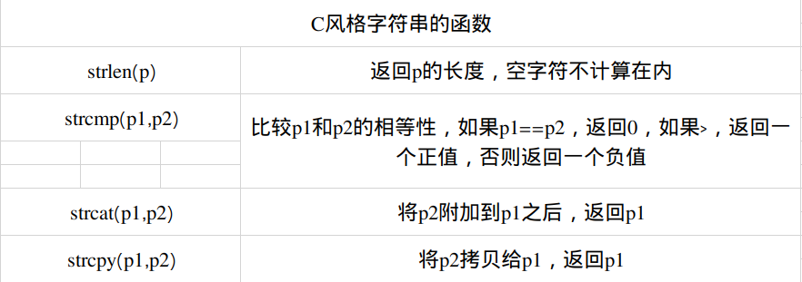

#C++ Primer Chapter3:3.5数组
数组是一种复合类型。数组的声明刑辱a[d],其中a师叔祖的名字，d师叔祖的维度，维度说明了数组中元素的个数，因此必须大于0，数组中元素个数也属于数组类型的一部分，变异的时候维度应该是一直的，也就是说维度必须是常量表达式。
unsigned cnt=42;//不是常量表达式
comnstexpr unsigned sz=42;//常量表达式，关于constexpr
int arr[10];//含有十个整数的数组
int *parr[sz];//含有四十二个整型指针的数组
string bad[cnt];//错误：cnt不是常量表达式
string strs[get_size()];//当get_size是constexpr时正确。
默认性况下，数组的元素被默认初始化。和内置类型的变量一样，如果在函数内部定义了某种内置类型的数字，那么默认初始化会令数组含有未定义的值。
定义数组的时候必须指定数组的类型，不能用auto关键字有初始值的列表推断类型，和vector一样，数组的元素应为对象，因此不存在引用的数组。
可以对数组的元素进行列表初始化，此时允许忽略数组的维度，如果在声明时没有指明维度，编译器会根据初始值的数量计算得到。如果指明了维度，呢么初始值的总数量不应该超过指定大小。
const unsigned sz=3;
int ial[sz]={0,1,2};//含有三个元素的数组，元素值分别是0,1,2
int a2[]={0,1,2};//维度是三的数组
int a3[5]={0,1,2};//等价于a3[]={0,1,2,0,0}
string a4[3]={"hi","bye"};//等价于a4[]={"hi","bye","hi"};
int a5[2]={0,1,2};//错误：初始值过多；
字符数组有一种额外的初始化形式，我们可以用字符串字面值对此类数组初始化。当时用这种方式时，一定要注意字符串字面值的结尾还有一个空字符，这个空字符也会被拷贝进入数组：
char a1[]={'C','+','+'};//列表初始化，没有空字符
char a2[]={'C','+','+','\0'};//维度是3的数组
char a3[]="C++";//自动添加表示字符串结束的空字符
const char a4[6]="Daniel";//错误：没有空间可存放空字符！
不能将数组的内容拷贝给其他数组作为初始值，也不能用数组为其他数组赋值：
int a[]={0,1,2}l//含有3个整数的数组
int a2[]=a;//错误，不允许使用一个数组初始化另一个数组
a2=a;//错误：不能把一个数组直接复制给另一个数组
一些编译器支持数组的赋值，这就是所谓的编译器扩展(complier extension)，但一般来说，最好避免使用费标准特性，因为含有非标准特性的程序很可能在其他编译器上无法正常工作。
和vector一样，数组能存放大多数类型的对象，例如，可以定义一个存放指针的数组，又因为数组本身就是对象，所以允许定义数组的指针及数组的引用，在这几种情况中，定义存放指针的数组比较直接和简单，但是定义数组的指针或数组的引用就比较复杂一点了：
int *ptrs[10];//ptrs是含有10个整形指针的数组
int &refs[10]=/*?*/;//错误：不存在引用的数组
int (*parray)[10]=*arr;//parray指向一个含有是个整数的数组
int (&arrRef)[10]=arr;//arrRef引用一个含有10个整数的数组
默认情况下，类型修饰符从右向左绑定，对修饰符的数量并没有特殊限制：
int *(&array)[10]=ptrs;//array是数组的引用，该数组含有10个指针
要想理解数组声明的含义，最好的方法是从数组的名字开始按照由内向外的顺序阅读。
与标准库类型vector和string一样，数组元素也能使用范围for语句或下标运算符来访问。
在使用数组下标时，通常将其定义为size_t类型，size_t是一种及其相关的无符号类型，它被设计得足够大以便能表示内存中任意对象的大小。在cstddef头文件中定义了size_t类型，这个文件时c标准库stddef.h头文件的c++语言版。
数组除了大小固定这一特点以外，其他用法与vector基本类似，例如可以用数组记录各分段的成绩个数：
//以10份为一个分数段统计成绩的数量，
unsigned scores[11]=();//11个分数段，全部初始化为0
unsigned grade;
while(cin>>grade)
{
if(frade<=100)
{
++scores[grade/10];//将当前分数段的计数值加1
}
}
与vector和string一样，当需要遍历数组所有元素是，最好的方法也是适用范围for语句，下面程序输出所有scores：
for(auto i:scores)
{
cout<<i<<"";//输出当前的计数值
}
cout<<endl;
因为维度是数组类型的一部分，所以系统知道数组scores中有多少个元素，适用范围for语句可以减轻人为控制遍历过程的负担。
与vector和string一样，数组的下标是否在合理范围之内由程序员负责检查。要想放置数组下标越界，除了小心谨慎注意细节以及对代码进行彻底的测试以外，没有其他好办法。
大多数常见的安全问题都源于缓冲区溢出错误。当数组或其他类似数据节后的下标越界并试图访问非法内存区域时，就会产生错误。
在c++语言中，指针和数组有非常紧密的联系，就如即将介绍的，使用数组是，编译器一般会把他转化成指针。
通常情况下，使用取地址符来获取指向某个对象的指针，取地址符可以适用于任何对象。对数组的元素使用取地址符就能得到指向该元素的指针：
string nums[]={"one","two","three"};//数组的元素是string对象
strings *p=&nums[0];//p指向nums的第一个元素
然而，数组还有一个特性：在很多用到数组名字的地方，编译器都会自动的将其替换，为一个指向数组首元素的指针：
string *p2=nums;//等价于p2=&nums[0]
//在大多数表达式中，使用数组类型的独享其实就是使用一个指向该数组首元素的指针
由上可知，在一些情况下数组的操作实际上市指针的操作，这一结论有很多隐含的意思。其中一层意思是当使用数组作为一盒auto变量的初始值时，推断得到的类型是指针而非数组。
int ia[]={0,1,2,3,4,5,6,7,8,9};//ia是一个含有十个整数的数组
auto ia2(ia);//ia2是一个整型指针，指向ia的第一个元素
ia2=42;//错误：ia2是一个数组，不能用int值给指针赋值
尽管ia室友10个整数构成的数组，担当使用ia作为初始值时，编译器实际执行的初始化过程类似与下面的形式：
auto ia2(&ia[0]);//显然ia2的类型是int*
当使用decltype关键字时上述转换不会发生，decltype(ia)返回类型室友10个整数构成的数组：
//ia3是一个含有10个整数的数组
decltype(ia) ia3={0,1,2,3,4,5,6,7,8,9};
ia3=p;//错误：不能用整数指针所给数组赋值
ia3[4]=i;//正确：把i的值赋给ia3的一个元素
指向数组元素的指针拥有许多功能。vector和string的迭代器支持的运算，数组的指针全都支持。例如，允许使用递增运算将指向数组元素的指针向前移动到下一个位置上：
int arr[]={0,1,2,3,4,5,6,7,8,9};
int *p=arr;//p指向arr的第一个元素
++p;//p指向arr[1]
就像是使用迭代器遍历vector独享中的元素一样，使用指针也能遍历数组中的元素。当然，这样做的前提是先获取到指向数组第一个元素的指针和指向数组尾元素的下一位置的指针。之前已经介绍过，通过数组名字或者数组中首元素的地址都能得到指向首元素的指针；不过获取尾喉指针就要用到数组的另外一个性质了。我们可以设法获取数组尾元素之后的那个并不存在的元素的地址：
int *e=&arr[10];//指向arr尾元素的下一位置的指针
利用上面得到的指针能充血之前循环，令其输出arr的全部元素：
for(int *b=arr;b!=e;++b)
{
cout<<*b<<endl;//输出arr的元素
}
尽管能计算得到尾后指针，但这种做法极易出错。为了能让指针的使用更简单、更安全。c++11新标准引入了名为begin和end的函数。这两个函数与容器中两个同名成员，功能类似，不过数组毕竟不是类类型，因此这两个函数不是成员函数，正确的使用形式是将数组作为他们的参数：
int ia[]={0,1,2,3,4,5,6,7,8,9};//ia是一个含有10个整数的数组
int *beg=begin(ia);//指向ia首元素的指针
int *last=end(ia);//指向arr尾元素的下一位置指针
begin函数返回指向ia首元素的指针，end函数返回指向ia尾元素下一位置的指针，这两个函数定义在iterator头文件中。
使用begin和end可以很容易的写出一个循环并处理数组中的元素。例如，假设arr是一个整型数组，下面的程序负责找到arr中的第一个负数：
//pbeg指向arr的首元素，pend指向arr尾元素的下一位置
int *pbeg=begin(arr),*pend=end(arr);
//寻找第一个负值元素，如果已经检查完全部元素则结束循环
while(pbeg!=pend&&*pbeg>=0)
{
++pbeg;
}
一个指针如果指向了某种内置类型数组的尾元素的“下一位置”，则其具备与vector的end函数返回的与迭代器类似的功能。特别要注意，尾后指针不能执行解引用和递增操作。
包括解引用、递增、比较、于正数相加、两个指针相减等在内的运算，用在指针和用在迭代器上意义完全一致。
给一个指针加上（减去）某整数值，结果仍是指针。新指针指向的元素与原来的指针相比前进了(后退了)该证书值个位置。
constexpr size_t=5;
int arr[sz]={1,2,3,4,5};
int *ip=arr;//等价于int* ip=arr[0];
int *ip2=ip+4;//ip2指向arr的尾元素arr[4]
ip加上4所得的结果仍是一个指针，该指针梭织的元素与ip原来所致的元素相比前进了4个位置。
给指针加上一个整数，得到的新指针仍需指向同一数组的其他元素，或者只想同一数组的尾元素的下一位置：
//正确：arr转换成指向它首元素的指针；p指向arrr尾元素的下一位置
int *p=arr=sz;//使用警告：不要解引用！
int *p2=arr+10;//错误，arr只有5个元素，p2的值未定义
和迭代器一样，两个指针相间的结果是他们之间的距离。参与运算的两个指针必须指向同一个数组当中的元素：
auto n=end(arr)-begin(arr);//n的值是5，也就是arr中元阿苏的数量
连个指针相减的结果类型是一种名为ptrdiff_t的标准库类型，和size_t一样，ptrdiff_t也是一种定义在cstddef头文件中的及其相关的类型。因为差值可能为负值，所以ptrdiff_t是一种带符号类型。
只要两个指针指向同一个号数组的元素，或者指向该数组的尾元素的下一位置，就能利用关系运算符对线期进行比较，例如，可以按照如下的方式遍历数组中的元素：
int *b=arr,*e=arr+sz;
while(b<e)
{
//使用*b
++b;
}
如果两个指针分别指向不相关的对象，则不能比较他们：
int i=0,sz=42;
int *p=&i,*e=&sz;
//未定义的：p和e无关，因此比较将毫无意义！
while(p<e)
上述指针运算同样适用于空指针和所值对象爱那个并非数组的指针。在后一种情况下，两个指针必须指向同一个对象活该对象下一位置。如果p时空指针，允许给p加上或减去一个值为0的整型常量表达式。两个空指针也允许彼此相减，结果为0.
指针加上一个整数所得的结果还是一个指针。假设结果指针指向了一个元素，则允许解引用该结果指针：
int ia[]={0,2,4,6,8};//含有5个整数的数组
int last=*(ia+4);//正确：把；ast初始化称8，也就是ia[4]的值
当对数组执行下标运算符时，编译器会自动将数组的名字转化为数字首元素的地址：
int ia[]={0,2,4,6,8};//含有5个整数的数字
int i=ia[2];//ia转化称指向数组首元素的指针，ia[2]得到（a+2）的所指的元素
int *p=ia;//p指向ia的首元素
i=*(p+2);//等价于i=ia[2]
只要指针指向的是数组中的元素(或者数组中尾元素的下一位置)，都可以执行下标运算：
int *p=&ia[2];//p指向索引为2的元素
int j=p[1];//p[1]等价于*(p+1),也就是ia[3]表示的那个元素
int k=p[-2];//p[-2]是ia[0]表示的那个元素
虽然标准库类型string和vector也能执行下标运算，但是数组与他们相比还是有所不同，标准库类型限定使用的小标必须是无符号类型，而内置的下标运算竟无此要求，
内置的下标运算符将所用的索引值不是无符号类型，这一点与vector和string不一样。
下面这些函数可用于操作c风格字符串，它们定义在cstring头文件中，cstring是c语言头文件，string.h的c++版本 
表中所列的函数不负责验证其字符串参数
传入此类函数的指针必须指向空字符作为结束的数组：
char ca[]={'C','+','+'};//不以空字符结束
cout<<strlen(ca)<<endl;//严重错误，ca没有一空字符结束
比较两个c等个字符串的方法和之前学过的比较标准库string对象的方法大相径庭。比较标准库string对象的时候，用的是普通的关系运算符和相等性运算符：
string s1="A string example";
string s2="A different string";
if(s1<s2)//false;s2小于s1
如果把这些运算符用在两个c风格字符串上，实际比较的将是指针而非字符串本身：
const char ca1[]="A string example";
const char ca2[]="A different example";
if(ca1<ca2)//未定义的，是图比较两个无关地址
谨记，当使用数组的时候实际上真正用的是指向数组首元素的指针。
要想比较两个风格字符串需要调用strcmp函数，此时比较的就不是指针了。
如果要将ca1和ca2两个字符相连接，不能直接相加。争取的方法是使用strcat函数和strcpy函数：
//如果我们计算了largeStr的大小将引发严重错误
strcpy(largeStr,cal);//把cal拷贝给largeStr
strcat(largeStr," ");//把largeStr的末尾加上一个空格
strcat(largeStr,ca2);//把ca2连接到largeStr后面
一个潜在的问题是，我们在估算largeStr所需空间时不容易估准，而且largeStr锁存内容一旦改变，就必须检查其空间是否足够。不幸的是，这样的代码到处都是，我们根本无法照顾周全。这类代码经常充满了风险我而且经常导致严重的安全漏洞。
对大多数应用来说，使用标准库string要比使用C风格字符串更安全、更高效。
前面介绍过使用字符串字面值来初始化string对象：
string s("Hello World!");//s的内容是Hello World!
更一般的情况是，任何出现字符擦混的地方都可以用一空字符串结束的字符数组来替代。
上属性值反过来就不成立了：如果程序的某处需要一个c风格字符串，无法直接用string对象来代替它，例如，不能用string对象直接初始化指向字符的指针。为了完成该功能，string专门提供了一个名为c_str的成员函数：
char *str=s;//错误：不能用string对象初始化char*
const char *str=s.c_str();//正确
函数的返回结果是一个指针该指针指向一个空字符串结束的字符数组，而这个数组所存的数据敲好与那个string对象的一样。
我们无法保证c_str函数返回的数组一直有效，事实上，如果后续的操作改变了s的值就可能让之前的数组失去效应。
之前介绍过不允许使用一个数组初始化一个内置类型的数组，也不允许使用vector独享初始化数组。相反的，允许使用数组来初始化vector对象。要实现这一目的，只需指明要拷贝区域的首元素地址和尾后地址就可以了：
int int_arr[]={0,1,2,3,4,5};
//ivec有6个元素，分别是int_arr中对应元素的副本
vector<int> ivec(begin(int_arr),end(int_arr));
用于初始化vector对象的值也可能仅是数组的一部分;
//拷贝三个元素：int_arr[1]、int_arr[2]、int_arr[3]
vector<int> subVec(int_arr+1,int_arr+4);
这条初始化语句用3个元素创建了对象subVec，3个元素的值分别来自int_arr[1]、int_arr[2]和int_arr[3].